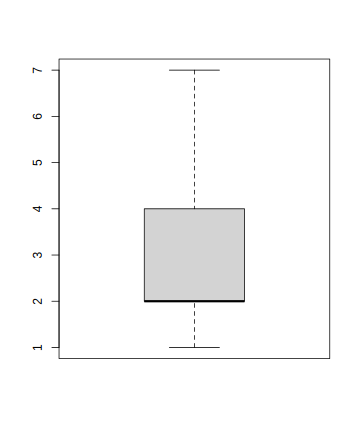

Lösungen der Aufgaben
Sitzung 1
2.4.6 Aufgabe 1
| Variable | Skalenniveau | Variablentyp | Anmerkungen | |
|---|---|---|---|---|
|
|
Lebensalter in Jahren | Verhältnisskala | diskret | ganze Zahlen vorausgesetzt |
|
|
Regenmenge in mm | Verhältnisskala | stetig | |
|
|
Güteklasse | Ordinalskala | qualitativ | |
|
|
Passagieraufkommen | Verhältnisskala | diskret | |
|
|
Baujahr | Intervallskala | diskret | |
|
|
Geschwindigkeit in km/h | Verhältnisskala | diskret | |
|
|
Sozialstatus (Unter-, Mittel und Oberschicht) | Ordinalskala | qualitativ | |
|
|
Temperatur in °F | Intervallskala | stetig | |
|
|
Fläche eines Bundeslands in km² | Verhältnisskala | stetig | |
|
|
Temperatur in K | Verhältnisskala | stetig | 0 K ist ein natürlicher Nullpunkt |
|
|
Einwohnerzahl | Verhältnisskala | diskret | |
|
|
Pegelstand | Intervallskala | stetig | willkürlicher Nullpunkt |
|
|
Staatsangehörigkeit | Nominalskala | qualitativ | |
|
|
Interesse an Statistik (gering bis hoch) | Ordinalskala | qualitativ | |
|
|
Klausurnote | Ordinalskala | qualitativ | wird jedoch oft metrisch verwendet |
|
|
Bodentyp | Nominalskala | qualitativ | |
|
|
Entfernung zum Stadtzentrum in km | Verhältnisskala | stetig | |
|
|
Körpergröße | Verhältnisskala | stetig | |
|
|
Kleidergröße (S bis XXL) | Ordinalskala | qualitativ | |
|
|
Monatliches Nettoeinkommen | Verhältnisskala | stetig | oder diskret für Cent-Beträge |
2.4.7 Aufgabe 2
- Die Werte sind im Bereich zwischen 3 und 210 Stunden. Eine Klassengröße von 25 Stunden bietet sich an, es sind jedoch auch andere Größen denkbar. Da die Variable diskret zu sein scheint, können die Klassengrenzen als ganze Zahlen angegeben werden.
| Wert \(x_i\) | Häufigkeit \(f_i\) |
|---|---|
| 1–25 | 9 |
| 26–50 | 6 |
| 51–75 | 1 |
| 76–100 | 3 |
| 101–125 | 1 |
| 126–150 | 1 |
| 151–175 | 0 |
| 176–200 | 2 |
| 201–225 | 1 |
- Das Resultat sollte je nach gewählter Klassengröße in etwa so aussehen:

- Die Verteilung ist unregelmäßig abfallend.
Sitzung 2
2.4.8 Aufgabe 1
- Die geordnete Liste ist:
1 1 1 2 2 2 2 3 3 4 4 5 7
Für das arithmetische Mittel und die Varianz ist diese Tabelle hilfreich:
Der häufigste Wert (und damit der Modalwert) ist 2.
Die Stichprobengröße ist ungerade (\(n=13\)), daher ist der Median: \[x_{(\frac{n+1}{2})} = x_{(7)} = 2\]
Das arithmetische Mittel berechnet sich einfacher mit den Werten aus der Tabelle:
\[\bar{x}={\displaystyle\frac{\sum\limits_{x=1}^nx_i}{n}}=\frac{3+8+6+8+5+6}{13}=\frac{37}{13}\approx2.85\]
- Die Spannweite ist: \[R=x_{(n)}-x_{(1)}=7-1=6\]
Der Quartilsabstand ist: \[\mathit{IQR}=Q_3-Q_1=4-2=2\]
Für die Varianz bieten sich ebenfalls die Tabellenwerte an: \[s^2=\frac{\sum\limits_{x=1}^n(x_i-\bar{x})^2}{n-1}\approx\frac{10,22+ 2,86+ 0,05+ 2,66+ 4,64+17,25}{13-1}=\frac{37,68}{12}=3.14\]
Schließlich ist die Standardabweichung: \[s=\sqrt{s^2}\approx\sqrt{3,14}\approx1,77\]
- Da der untere Angelpunkt und der Median zusammenfallen, sieht der Boxplot etwas ungewöhnlich aus:

2.4.9 Aufgabe 2
- Die Klassengröße 2,5 cm ergibt überschaubare neun Klassen und runde Zahlen.
Um die Berechnung des arithmetischen Mittels zu vereinfachen berechnen wir auch gleich den Klassendurchnitt und Zwischensummen:
Der Modalwert der klassierten Stichprobe ist die Klasse
87,5 bis unter 90,0
.Bei \(n=43\) ist \(Q_1=\frac{x_{(11)}+x_{(12)}}{2}\) und \(Q_3=\frac{x_{(32)}+x_{(33)}}{2}\).
Aus der geordneten Liste können wir \(Q_1=85,25\) und \(Q_3=90,75\) bestimmen.
Wenn uns nur die klassierte Verteilung zur Verfügung steht oder wenn der Datensatz besonders unübersichtlich ist, ist es auch legitim, aus der kumulativen Häufigkeit \(Q_1=83,75\) und \(Q_3=91,25\) für die klassierte Verteilung abzulesen.
Je nachdem beträgt der Quartilsabstand \(\mathit{IQR}=Q_3-Q_1\) dann 5,5 oder 7,5 cm.
- Die Summen für das arithmetische Mittel entnehmen wir der letzten Spalte der Wertetabelle:
\[\begin{aligned} \bar{x}&=\frac{\sum\limits_{i=1}^nx_i}{n} \\ &=\frac{76,25+ 243,75+ 418,75+ 603,75+1242,50+ 821,25+ 187,50+ 192,50}{43} \\ &=\frac{3786,25}{43} \\ &\approx88,05 \end{aligned}\]
- Für die Standardabweichung brauchen wir andere Werte in der Tabelle:
Die Varianz beträgt:
\[\begin{aligned} s^2&=\frac{\sum\limits_{i=1}^{n}(x_{i}-\bar{x})^2}{n-1} \\[4pt] &=\frac{139,24+138,72+ 92,45+ 22,68+ 6,86+ 92,16+ 64,98+134,48}{43-1}\\[4pt] &=\frac{691,57}{42}\approx{16,47} \end{aligned}\]
Somit beträgt die Standardabweichung \[s\approx\sqrt{16,47}\approx4,06\]
- Beim Boxplot stellt der Außreißer nach unten eine Besonderheit dar, der kleiner als der Minimalwert \[Q_1-1,5\cdot\mathit{IQR}=83,75-1,5\cdot5,5=75,5\] ist und somit als Kreis dargestellt wird: